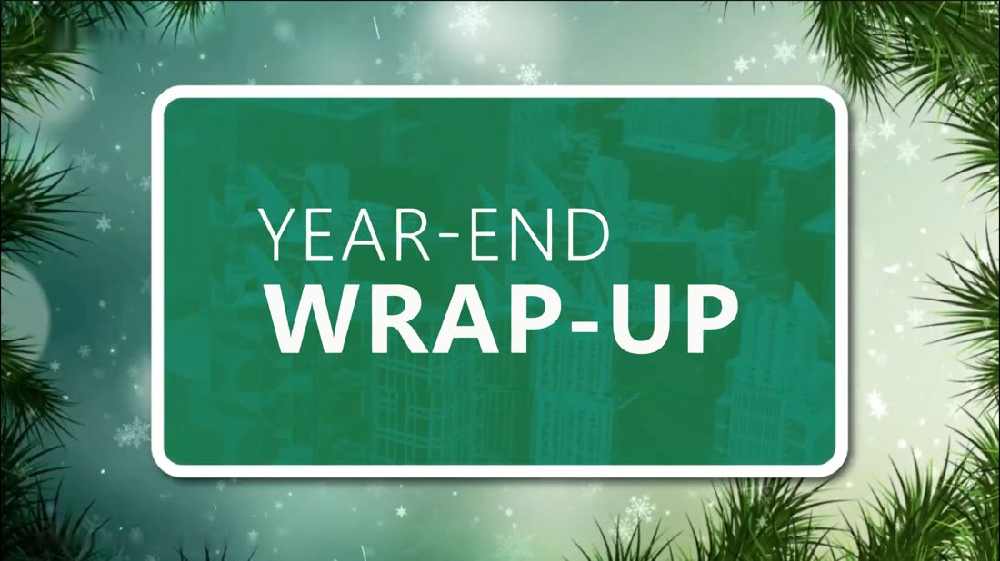

Executive communications and AI adoption
Executive and employee communications for a 4,500+ person global organization
- The challenge
- Help a global organization understand strategic priorities, organizational change and new AI capabilities.
- My role
- Developed executive messaging and a monthly leadership video series, and built AI tools for the communications team.
Explore the project: Executive communications and AI adoption
Strategy and my role
Developed executive messaging and a monthly leadership video series for Customer Success, translating strategic priorities, organizational transformation and AI capabilities into practical communications.
Executive voice
Authored and ghostwrote executive emails, scripts, presentations and posts across internal channels.
Applied AI
Built AI agents and workflows for drafting, editing and summarization while preserving executive voice and tone.